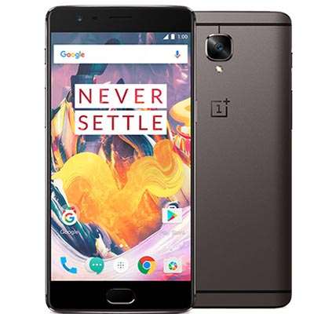

- 5,5 inch-scherm,resolutie: 1920x1080
- Dubbele camera (16 + 20 megapixel)
- Snapdragon 835-chip
- 6/8GB werkgeheugen, 128GB opslag
- Android 8.0
- Supersnelle Fingerprintscanner

- 5,5 inch-scherm,resolutie: 1920x1080
- Camera (16 + 16 megapixel)
- Snapdragon 821-chip
- 6GB werkgeheugen, 64/128GB opslag
- Android 7
- Fingerprintscanner

- 5 inch-scherm,resolutie: 1920x1080
- Camera (13 + 8 megapixel)
- Snapdragon 801-chip
- 3GB werkgeheugen, 16GB opslag
- Android 6.0
- Dual Sim